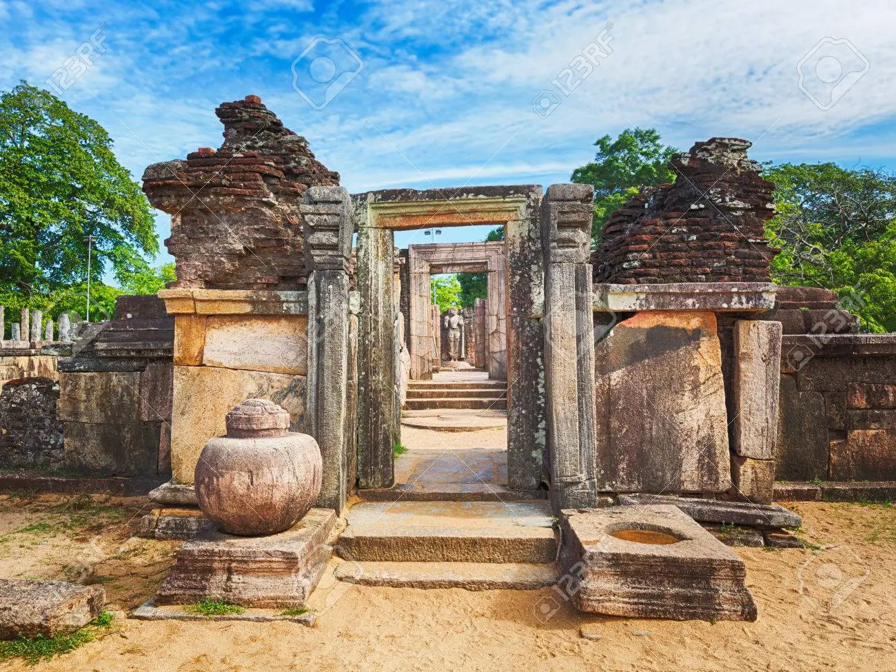

Anuradhapura Districts
Sri Maha Bodhi
Jaya Sri Maha Bodhi is a sacred bo tree in the Mahamewna Gardens, Anuradhapura, Sri Lanka. It is the southern branch from the historical Sri Maha Bodhi at Buddha Gaya in India under which Buddha attained Enlightenment. It was planted in 288 BC, and is the oldest living human-planted tree in the world with a known planting date. The other fig trees that surround the sacred tree protect it from storms and animals such as monkeys, bats, etc. In April 2014, the government banned all construction within 500 metres of the tree. Only construction that obviously will not harm the tree will be allowed
Jetavanaramaya
The Jetavanarama stupa or Jetavanaramaya is a stupa, or Buddhist reliquary monument, located in the ruins of Jetavana monastery in the UNESCO world heritage city of Anuradhapura, Sri Lanka. At 122 metres, and was the world's tallest stupa; and the third tallest structure in the world when it was built by King Mahasena of Anuradhapura. He initiated the construction of the stupa following the destruction of the Mahaviharaya of Anuradhapura. His son Maghavanna I completed the construction of the stupa, and was renovated by Parakramabahu I of Polonnaruwa. A part of a sash or belt tied by the Buddha is believed to be the relic that is enshrined here. The structure is significant in the island's history as it represents the tensions within the Theravada and Mahayana sects of Buddhism; it is also significant in recorded history as one of the tallest structures in the ancient world, and the tallest non-pyramidal building; the height of the stupa was 122 metres, making it the tallest stupa in the ancient world. With the destruction and abandonment of Anuradhapura kingdom in the 11th century, the stupa with others was covered by jungleRuwanweli Maha Seya
The Ruwanweli Maha Seya, also known as the Mahathupa is a stupa in Anuradhapura, Sri Lanka. Two quarts or one Dona of the Buddha's relics are enshrined in the stupa, making it the largest collection of his relics anywhere. It was built by Sinhalese King Dutugemunu in c. 140 B.C., who became king of Sri Lanka after a war in which the Chola King Elāra was defeated. It is also known as Swarnamali Seya, Svaṇṇamāli Mahaceti and Rathnamali Seya. This is one of the "Solosmasthana" and the "Atamasthana". The stupa is one of the world's tallest ancient monuments, standing at 103 m and with a circumference of 290 m. The original stupa had been about 55 m in height and was renovated by many kings. The Kaunghmudaw Pagoda in Sagaing, Myanmar is modelled after this stupa The Mahavamsa contains a detailed account on the construction and the opening ceremony of the stupa. The stupa was covered by jungle as of the 19th century. After fund raising efforts by a bhikkhu, it was renovated in the early 20th century.
Polonnaruwa District
Polonnaruwa Gal Viharaya
The Gal Vihara, and originally as the Uttararama, is a rock temple of the Buddha situated in the ancient city of Polonnaruwa in North Central Province, Sri Lanka. It was fashioned in the 12th century by Parakramabahu I. The central feature of the temple is four rock relief statues of the Buddha, which have been carved into the face of a large granitic rock. The images consist of a large seated figure, another smaller seated figure inside an artificial cavern, a standing figure and a reclining figure. These are considered to be some of the best examples of ancient Sinhalese sculpting and carving arts, and have made the Gal Vihara the most visited monument at Polonnaruwa. The images of Uttararama follow a different style from the images of the previous Anuradhapura period, and show some significant differences. The identity of the standing image is subject to a certain amount of dispute among historians and archaeologists, some of whom argue that it depicts the monk Ananda rather than the Buddha. Each of the images have been carved in a way that uses a maximum possible area of the rock, and their heights seem to have been decided based on the height of the rock itself.
Rankoth Vehera
Rankoth Vehera is a stupa located in the ancient city of Polonnaruwa in Sri Lanka. The stupa was built by Nissanka Malla of Polonnaruwa, who ruled the country from 1187 to 1196. The Rankoth Vehera has been built according to the tradition of the stupas of the Anuradhapura Maha Viharaya and bears a close resemblance to Ruwanwelisaya. In fact, a stone inscription situated close to the stupa even identifies it by the name "Ruwanweli". However, it has later come to be known by the currently used name, Rankoth Vehera. In Sinhalese, ran means gold, kotha is the name given to the pinnacle of a stupa, and vehera means stupa or temple. Thus, the name Rankoth Vehera can be roughly translated to English as "Gold Pinnacled Stupa". Along with the Kiri Vehera, it is one of the most revered stupas in Polonnaruwa
Hetadage
Hatadage is an ancient relic shrine in the city of Polonnaruwa, Sri Lanka. It was built by King Nissanka Malla, and had been used to keep the Relic of the tooth of the Buddha. The Hatadage had been built using stone, brick and wood, although only parts of the brick and stone walls now remain. It appears to have been a two-storey structure, but the upper storey has now been destroyed. Three Buddha statues carved out of granite rock are located within a chamber of the shrine
